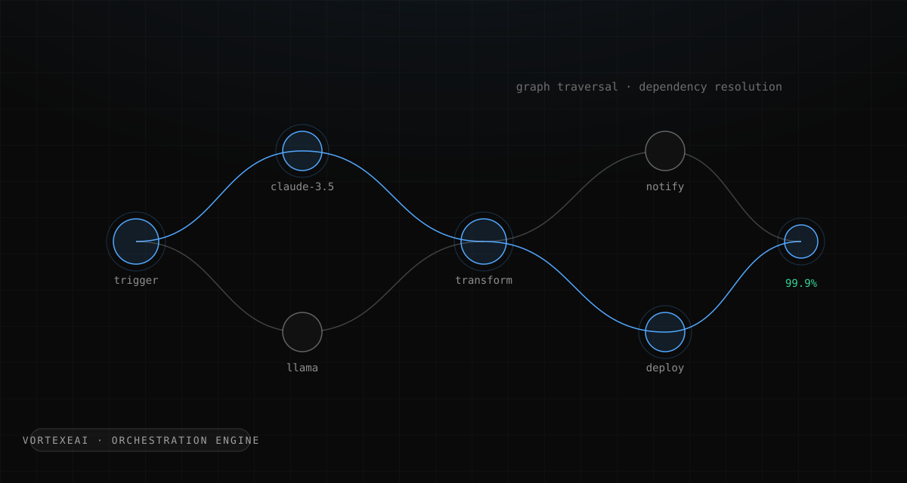

The product bet
The thesis behind VortexeAI: most people who would benefit from AI automation will never
write a line of glue code. They don't want a framework. They want to describe a repetitive
task, test it against near-realistic scenarios before committing resources, and then have it
run on a schedule, on a trigger, or on demand. So the product surface was a visual node
editor: chain actions into a workflow, connect a data source, pick a model, ship a
micro-service in seconds. Users could pull in ChatGPT, Claude, or Llama (the platform auto-suggests the model best suited to each task), feed workflows anything from
.pdf to .wav, and eventually sell finished workflows to other
users in a marketplace.
Every one of those product promises quietly depends on the same engineering property: a workflow that runs today must run the same way tomorrow. A developer tolerates flaky automation because they can read the logs. A non-technical user who built something out of Legos experiences one silent failure and never comes back. For a product whose entire audience is non-technical, reliability isn't a quality attribute. It is the feature.
The engine: graph traversal, not vibes
The tempting architecture in 2024 was to let an LLM plan the execution: hand it the workflow, let it decide what to run next. We went the other way. The orchestration engine treats a workflow as what it actually is, a directed graph, and executes it by deterministic graph traversal with dependency resolution. The engine topologically orders the nodes, resolves what each step needs before it runs, executes independent branches without blocking each other, and knows exactly which downstream steps are invalidated when an upstream one fails.
The model gets to be creative inside a node. It never gets a vote on what runs next.
That boundary, probabilistic inside the node and deterministic between nodes, is what made 99.9% execution reliability achievable. Failures still happen: an API times out, a model returns something malformed. But because the engine owns the control flow, a failure is a located event on a known graph edge with a known retry story, not a mystery somewhere inside an agent's reasoning. Debugging a workflow becomes reading a path, not interrogating a transcript.
The shape of the engine's execution loop
async function execute(workflow: WorkflowGraph, run: RunContext) {
const order = topologicalSort(workflow.nodes, workflow.edges) // cycles rejected at save-time
const results = new Map<NodeId, NodeResult>()
for (const batch of readyBatches(order, results)) { // independent nodes run together
await Promise.all(batch.map(async (node) => {
const inputs = resolveDependencies(node, results) // only declared upstream outputs
const memory = routeMemory(node.consumes, results) // context is a dependency too
try {
results.set(node.id, await runNode(node, inputs, memory, run))
} catch (err) {
markInvalidated(downstreamOf(node, workflow), results) // failure is a located event
throw new NodeFailure(node.id, err)
}
}))
}
return results
}Everything the product promises is visible in that loop: cycles can't be saved, so traversal can't hang; a node receives only what it declared, so runs are reproducible; and when a node fails, the engine knows exactly which downstream work is invalidated, and that is what the user's error message is built from.
The same boundary shaped the LLM tool runtime. Nodes that call models needed memory across steps (a summarization node feeding a drafting node feeding a formatting node), but naive approaches either stuff the entire history into every call (cost explodes, context drowns) or share nothing (every node starts amnesiac). The runtime used memory routing: each node declares what it consumes, and the runtime routes forward only the relevant state. It's dependency resolution again, applied to context instead of execution order: the graph tells you not just what to run, but what each step deserves to know.
The editor is the product
The React/Next.js node editor consumed as much design effort as the engine, because for the user, the editor is the product. The "Legos" promise sets a brutally high bar: every concept the engine cares about (dependencies, triggers, data-shape mismatches) has to be expressible by someone who has never heard those words. The measure that mattered wasn't feature count; it was time-to-first-working-workflow, and the iteration loop of watching real users get stuck drove onboarding 40% faster over the product's life. By the end, 50+ automation patterns were deployed across users, the strongest evidence that the abstraction held for problems we hadn't personally imagined.
Wearing the CEO hat while holding the architecture
I co-founded VortexeAI as CEO while owning the core engine, which meant every architecture decision had a business constraint attached and every business promise had an architecture cost. Demo-driven development is real at a four-month-old startup: TechStars conversations and user onboarding calls happen whether or not your dependency resolver is elegant. The discipline that saved us was the same one I'd carry into every system since: decide which properties are load-bearing and non-negotiable (deterministic execution, isolated failure), and let everything else be renegotiated weekly. Features got cut ruthlessly. The execution contract never did.
Learnings
Non-technical users are the hardest reliability customers. They can't read a stack trace, so the system has to fail in vocabulary they own: which step, on which input, and what to do about it. Designing error surfaces for that audience made every later system I built more honest. An error message is an API, and most engineers only design it for themselves.
Determinism at the boundary is the pattern that kept paying. The engine's core idea, LLMs create inside a step while deterministic code owns the graph, is the same invariant I later scaled into Tracewell's trust boundary and SCM's deterministic planning nodes. VortexeAI is where I learned it, under the least forgiving conditions: paying users, live demos, four months.
0→1 speed comes from knowing what you're not building. Four months to 200+ DAU wasn't fast typing; it was scope discipline. A marketplace launched as one-time purchases, not a payment platform. Integrations shipped as direct API connections before pre-built connectors. Every "not yet" was written down with the condition that would change it, the habit that later became formal decision records in my production systems.